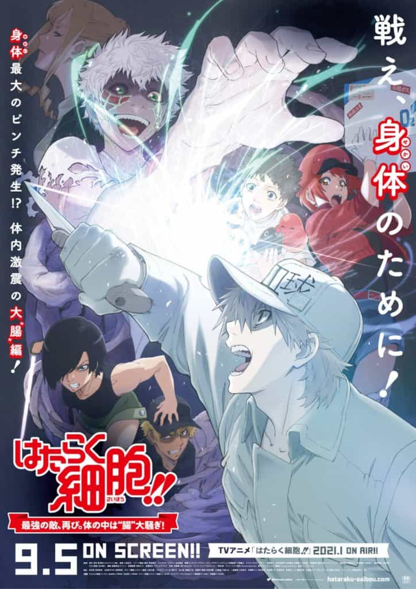

Lançamento
Entrevistas & Making of
Naruto O Filme: O Confronto Ninja no Pais da Neve
Diretor: Tensai Okamura
Roteiro: Masashi Kishimoto || Estreia: 21/08/2004
Dr. Stone
Diretor: Shinya Iino
Roteiro: Yuichiro Kido || Estreia: 05/06/2019
Little Witch Academia
Diretor: Yoh Yoshinari
Roteiro: Yoshihiro Furusawa || Estreia: 08/01/2017
Novidades
-
Burn the Witch
Tite Kubo, a autora de Bleach, está de volta com um novo filme! Seu mangá one-shot, Burn The Witch, também receberá uma adaptação para anime no outono de 2020.
Burn The Witch é sobre duas bruxas chamadas Noel Niihashi e Spangle Ninii, que trabalham para o ramo ocidental da Soul Society e se passam no mesmo mundo que Bleach.
Burn the Witch Novo Filme Bleach -

Cells at work!!
Fãs da série alegrem-se! Um novo filme com duração de 1 hora e 52 minutos foi anunciado!
O filme foi anunciado para fazer parte da segunda temporada, com lançamento previsto para janeiro de 2021
Cells At Work Novo Filme -
Violet Evergarden O Filme
Depois do filme paralelo do ano passado, Eternity and the Auto Memory Doll, Violet Evergarden está voltando aos cinemas com um novo filme. Os detalhes do enredo ainda não foram revelados, mas o novo filme continuará a história do anime original.
Violet Evergarden Novo Filme
Sobre
Meu nome é Omar, tenho 24 anos e faço Ciências da Computação na PUC Minas em Belo
Horizonte. Esse site é um trabalho
da faculdade, da matéria Desolvimento de Interfaces WEB. O tema é Portal de Filmes.
Espero que gostem.
- Redação: Omar Krauss
- Pesquisa: Omar Krauss
- Gerente Geral: Rommel Carneiro